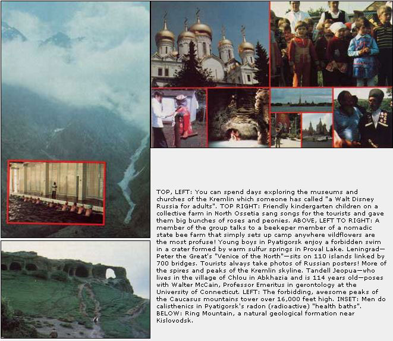

Celestial Seasonings (the herb company) and the Citizens Exchange Corps (a non-profit people-to-people program) recently sponsored a three-week, 3,000-mile study-tour of health and nutrition through the Soviet Union. The tour-in between airline travel to and from Russia itself-began in Moscow's Red Square and ended in the northern "white nights" of Leningrad. Most of the trip, however, was spent exploring "the garden of the centenarians" in the Transcaucasian republics of Azerbaijan and Georgia . . . the ancient, exotic region of the U.S.S.R. between the Caspian and Black Seas where so many people are rumored to live to such ripe old ages.
One of MOTHER's helpers-Sara Pacher-went along on the excursion and she reports that, "In search of the ways of the 'long dwellers' of this beautiful, healthful section of the Soviet Union, we met with gerontologists, sociologists, physical therapists, nutritionists, and health spa and farm personnel. Finally-in the small, autonomous republic of Abkhazia on the Black Sea-we even spent some time with a handsome, active 114-year-old tea farm worker who still rides horses and dances in an internationally acclaimed folk group that is mostly made up of centenarians.
"We also discovered, along with modern medical practices, a marvelous reliance on the natural cures and techniques found in old Russian folk medicine. 'We first test to see if something works . . . and then we try to find out why it works,' we were told."
Sara further reports that in the U.S.S.R.-where health care is considered "the property of the people" and is free of charge-an ounce of prevention really is considered to be less expensive than a pound of cure.
"There is a strong emphasis on preventing a disease entirely or arresting it in its early stages," Sara says. "This might involve a four-week 'rest cure' in one of the country's garden-like health spas with a scientifically prescribed regimen of mineral and mud baths. Or electric, sonar, and light therapy. Or inhalation treatments of mineral waters and herbs. Or simply diet, exercise, and climate. The trade unions have found that a sanitarium set up in one of the health resorts can pay for itself in four years with increased worker production and lessened sick leave."
Sara's group also visited a city-run Zona Zdorovia (Zone of Health) in Baku on the Caspian Sea. "It was particularly popular with retired people," she notes, "and featured early morning, outdoor exercises accompanied by accordian music, short sea voyages, hiking, and breathing the negatively charged ions of such 'curative' plants as rosemary, geraniums, and laurel. Massages and self-massages, music therapy (singing, to teach proper breathing techniques . . . and listening to carefully selected music, to relieve depression and effect cures), and games-volleyball, table tennis, basketball, etc. -were also on the Zone of Health's program. 'Coordination,' we were told, 'is not lost through old age . . . but through disuse.' "
Still another highlight of the journey through Russia (one that Celestial Seasonings' Mo Siegel probably had a lot to do with) was the spontaneous "herb walks" that took place almost everywhere the group went in the Soviet Union. "Since the region between the Caspian and Black Seas contains over 4,500 species of plants, including 550 wild herbs, these walks occurred at almost any time and in almost any place: within the ruined walls of a pagan temple . . . above timberline in the majestic Caucasus mountains . . . on a Black Sea citrus farm . . . or at any unscheduled bus stop along any country road. These impromptu inspections of the native flora-like so many other spur-of-the-moment things we did-were easy to work into our schedule because, as nearly as I could tell, no 'secret police' followed us around and we were free to come and go as we pleased."
Sara closed her report to the rest of MOTHER's staff by noting that, as much as everyone on the trip enjoyed seeing the sights of Russia, the "best part of all" was getting to meet and know some of the multi-racial, multilingual people of the Soviet Union. "They were surprisingly gracious, friendly, generous, and affectionate. And as interested in our manners, clothes, and customs as we were in theirs."
Now we bring this trip up here because, for some time, readers of this magazine have been asking if MOTHER has any plans to organize and sponsor tours of this nature.
Well, yes . . . MOTHER does. Which is why she sent Sara (who has both magazine and travel experience) on the trip mentioned here in the first place. It might very well be both interesting and educational if a group of MOTHER readers could get together for, say, a journey through the Amazon Basin (to see the environmental damage described by Anne and Paul Ehrlich in their column in this issue). Or a visit to the best biodynamic and other "organic" gardens of Europe. Or a tour of Alaska's North Slope to see exactly what changes the oil wells have wrought on the ecology of the area. Or-as outlined here-a firsthand inspection of the health and nutrition of the Soviet Union.
So how about it? Are you interested? If you are, MOTHER (and Sara) are all ready to start the ball rolling by setting up another tour of Russia (very much like the one described here) running-tentatively-from May 27 through June 16, 1979.
The cost of this three-week adventure to the U.S.S.R. will be $1,900 per individual . . . and that price includes all air fares and transportation from New York and on return, transfers, double occupancy in first-class hotels, meals, Russian tourist registration fees, and scheduled professional and sightseeing services. MOTHER (Sara) will make all the necessary arrangements and she (Sara) guarantees a good time for all. She (Sara) also intends to arrange more visits with those fabled Soviet centenarians the next time around.
If this appeals to you, we'd like to know about it. Send your name and address and a $50 deposit for each member of your party who'd like to join MOTHER's 1979 Health and Nutrition Tour of the Soviet Union to: MOTHER's Tours, P.O. Box A, East Flat Rock, North Carolina 28726. Although the number of seats for this trip is strictly limited, the $50 deposit per seat will be enough to hold a spot for you. And if, for some reason, you have to change your plans between now and the time the tour leaves . . . your deposit will be cheerfully refunded, in full.
OK! That's it. Your chance to take an exceptionally, interesting trip with some of the finest people (other' MOTHER readers) in the world. You've got the ball. Don't drop it!
|
 |
|
|